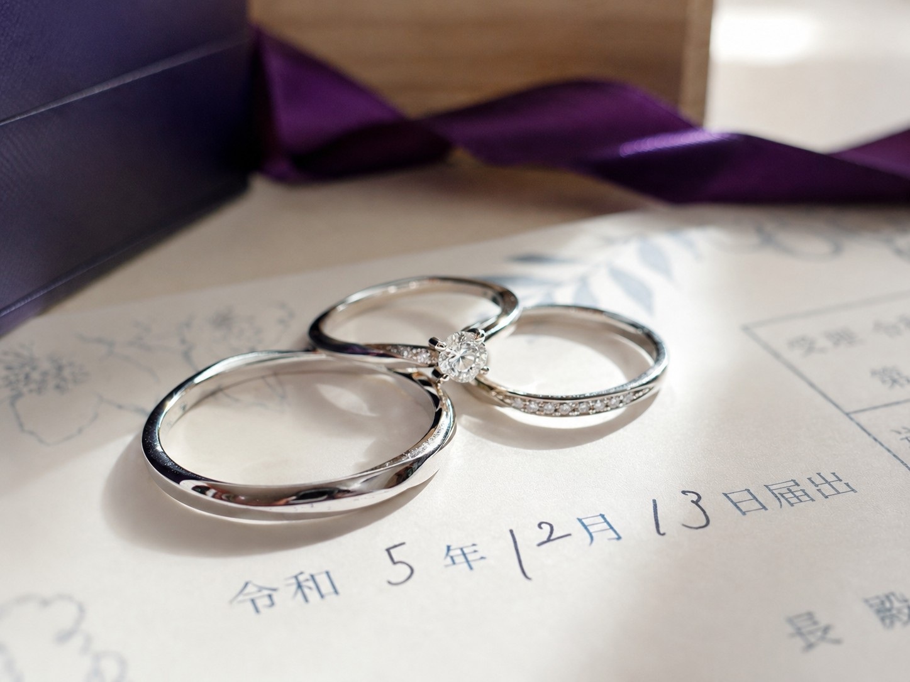

洋風ウェディング
ふたりの物語。
元プロダクトの `/western` 画面で使用している、写真を中心にした洋風ウェディングのデザインです。

SOURCE DESIGN / WEDDING-WESTERN
EXTRACTED FROM PRODUCT
プロフィール、会場案内、タイムライン、出欠回答をひとつの招待ページにまとめる構成を反映しています。
元プロダクトの `/western` 画面で使用している、写真を中心にした洋風ウェディングのデザインです。

SOURCE DESIGN / WEDDING-WESTERN
プロフィール、会場案内、タイムライン、出欠回答をひとつの招待ページにまとめる構成を反映しています。